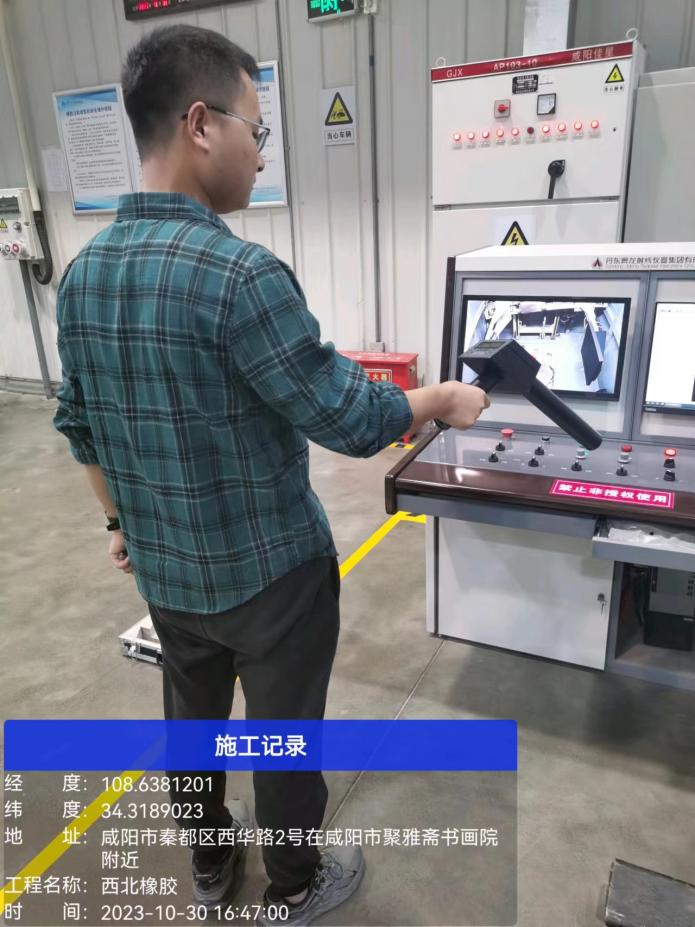
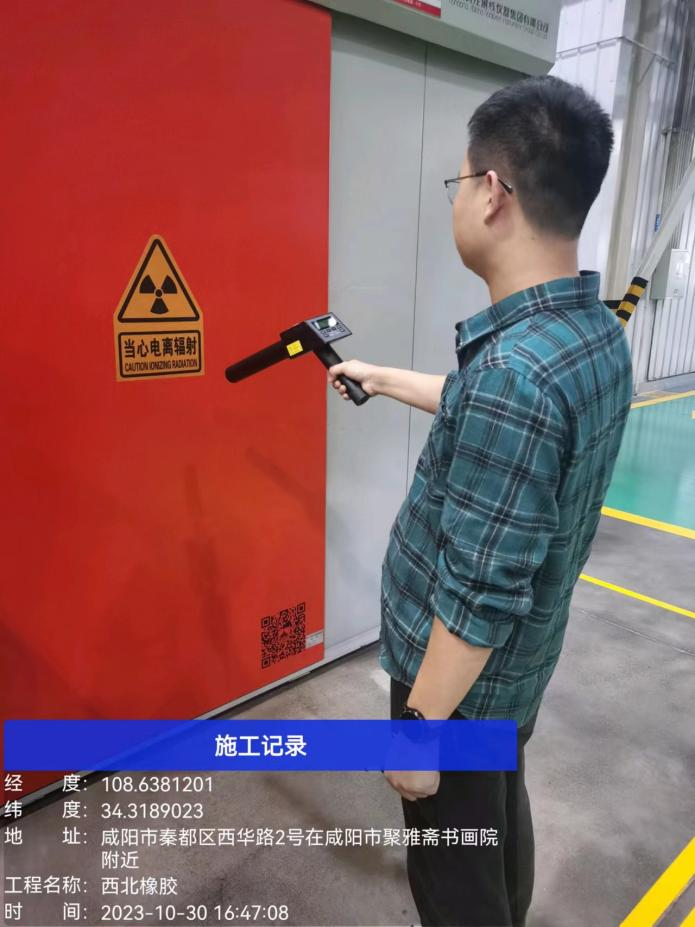

检 测 报 告
QNJC-2024-0001-FH
项目名称： | 使用射线装置核技术利用项目辐射环境检测 |
委托单位： | 西北橡胶塑料研究设计院有限公司 |
检测性质： | 委托检测 |
报告日期： | 2023年11月15日 |
陕西秦洲核与辐射安全技术有限公司
（检验检测专用章）
检 测 报 告
QNJC-2024-0001-FH
项目名称： | 使用射线装置核技术利用项目辐射环境检测 |
委托单位： | 西北橡胶塑料研究设计院有限公司 |
检测性质： | 委托检测 |
报告日期： | 2023年11月15日 |
陕西秦洲核与辐射安全技术有限公司
（检验检测专用章）
报告说明
1.本报告适用于陕西秦洲核与辐射安全技术有限公司电离辐射、电磁辐射等项目的检测报告。
2.本报告无陕西秦洲核与辐射安全技术有限公司“检验检测专用章”、无骑缝章、无章、无编制人、审核人、签发人签字无效。
3.现场检测，检测结果仅对当次检测时工况负责，委托方需对自己提供的工况等信息负责。
4.如委托单位对本报告检测数据有异议，应于收到本报告之日起十五日内向本公司提出书面申诉，逾期则视为认可检测结果。
5.本报告全部或部分复制，私自转让、盗用、冒用、涂改或以其他任何形式篡改的均属无效。
6.未经我公司同意，本报告不得用于委托范围之外的其他商业用途。
7.*为分包检测结果。
名 称：陕西秦洲核与辐射安全技术有限公司
地 址：陕西省西咸新区沣西新城中国西部科技创新港创科大厦12层
电 话：029-89586445
传 真：029-89586445
网 址：www.qznrs.net
邮政编码：712046

项目名称 | 使用射线装置核技术利用项目辐射环境检测 | 使用射线装置核技术利用项目辐射环境检测 | 使用射线装置核技术利用项目辐射环境检测 | ||||||
委托单位 | 西北橡胶塑料研究设计院有限公司 | 西北橡胶塑料研究设计院有限公司 | 西北橡胶塑料研究设计院有限公司 | ||||||
检测地点 | 陕西省咸阳市秦都区西华路2号 | 陕西省咸阳市秦都区西华路2号 | 陕西省咸阳市秦都区西华路2号 | ||||||
联系人 | 张凯 | 联系电话 | 155 9103 3558 | ||||||
检测类别 | 电离辐射 | 委托编号 | QNJC-2024-0001-FH | ||||||
检测因子 | X、γ辐射剂量率 | 检测日期 | 2023年10月30日 | ||||||
检测依据 | 《辐射环境监测技术规范》（HJ 61-2021） 《环境γ辐射剂量率测量技术规范》（HJ 1157-2021） 《工业探伤放射防护标准》（GBZ 117-2022） | 《辐射环境监测技术规范》（HJ 61-2021） 《环境γ辐射剂量率测量技术规范》（HJ 1157-2021） 《工业探伤放射防护标准》（GBZ 117-2022） | 《辐射环境监测技术规范》（HJ 61-2021） 《环境γ辐射剂量率测量技术规范》（HJ 1157-2021） 《工业探伤放射防护标准》（GBZ 117-2022） | ||||||
评价依据 | 《工业探伤放射防护标准》（GBZ 117-2022） | 《工业探伤放射防护标准》（GBZ 117-2022） | 《工业探伤放射防护标准》（GBZ 117-2022） | ||||||
检测结果及结论 | 检测结果详见表3；检测结论详见表4 | 检测结果详见表3；检测结论详见表4 | 检测结果详见表3；检测结论详见表4 | ||||||
附件 | 现场检测照片 | 现场检测照片 | 现场检测照片 | ||||||
备注 | / | / | / | ||||||
一、检测仪器
表1 检测仪器基本信息
仪器名称 | 仪器型号 | 仪器编号 | 测量范围 | 溯源单位/证书编号 | 有效期至 |
辐射防护用X、γ辐射周围剂量当量率仪 | RJ38-3602 | QNJC-YQ-034 | （0.01-600.00）μSv/h | 中国辐射防护研究院放射性计量站/校字第[2023]-L312 | 2024.07.11 |
二、射线装置
表2 射线装置基本信息[1]
序号 | 装置名称 | 设备型号 | 设备编号 | 生产厂家 | 额定参数 | 射线装置分类 | 类型 | 使用场所 |
1 | 高频X射线实时成像检测系统 | XYG1611 | 02-0371 | 丹东奥龙射线仪器集团有限公司 | 160kV 11mA | Ⅱ类 | 定向 | 硅胶型材料科研试验厂房 探伤机房 |
注：[1]委托方提供的信息。
三、检测结果
表3 检测结果
装置名称 | 装置名称 | 高频X射线实时成像检测系统 | 高频X射线实时成像检测系统 | 装置型号 | 装置型号 | XYG1611 | XYG1611 | ||||||||||||||||||||||||||||||||||||||||||||||||||||||||
装置编号 | 装置编号 | 02-0371 | 02-0371 | 生产厂家 | 生产厂家 | 丹东奥龙射线仪器集团有限公司 | 丹东奥龙射线仪器集团有限公司 | ||||||||||||||||||||||||||||||||||||||||||||||||||||||||
使用场所 | 使用场所 | 硅胶型材料科研试验厂房探伤机房 | 硅胶型材料科研试验厂房探伤机房 | 本 底 | 本 底 | （0.07～0.09）μSv/h | （0.07～0.09）μSv/h | ||||||||||||||||||||||||||||||||||||||||||||||||||||||||
检测条件 | 检测条件 | 100kV，5mA，主束方向朝北，北墙无探伤工件遮挡，其他方向有10mm钢制工件遮挡。 | 100kV，5mA，主束方向朝北，北墙无探伤工件遮挡，其他方向有10mm钢制工件遮挡。 | 100kV，5mA，主束方向朝北，北墙无探伤工件遮挡，其他方向有10mm钢制工件遮挡。 | 100kV，5mA，主束方向朝北，北墙无探伤工件遮挡，其他方向有10mm钢制工件遮挡。 | 100kV，5mA，主束方向朝北，北墙无探伤工件遮挡，其他方向有10mm钢制工件遮挡。 | 100kV，5mA，主束方向朝北，北墙无探伤工件遮挡，其他方向有10mm钢制工件遮挡。 | ||||||||||||||||||||||||||||||||||||||||||||||||||||||||
序号 | 检测点位描述 | 检测点位描述 | 检测结果（μSv/h） | 序号 | 检测点位描述 | 检测点位描述 | 检测结果（μSv/h） | ||||||||||||||||||||||||||||||||||||||||||||||||||||||||
1 | 操作位 | 操作位 | 0.07 | 14 | 机房东侧墙表面30cm 2# | 机房东侧墙表面30cm 2# | 0.07 | ||||||||||||||||||||||||||||||||||||||||||||||||||||||||
2 | 线缆口 | 线缆口 | 0.06 | 15 | 机房南侧墙表面30cm 1# | 机房南侧墙表面30cm 1# | 0.06 | ||||||||||||||||||||||||||||||||||||||||||||||||||||||||
3 | 机房防护门表面30cm左侧 | 机房防护门表面30cm左侧 | 0.06 | 16 | 机房南侧墙表面30cm 2# | 机房南侧墙表面30cm 2# | 0.06 | ||||||||||||||||||||||||||||||||||||||||||||||||||||||||
4 | 机房防护门表面30cm中央 | 机房防护门表面30cm中央 | 0.06 | 17 | 机房南侧墙表面30cm 3# | 机房南侧墙表面30cm 3# | 0.06 | ||||||||||||||||||||||||||||||||||||||||||||||||||||||||
5 | 机房防护门表面30cm右侧 | 机房防护门表面30cm右侧 | 0.07 | 18 | 机房西侧墙表面30cm 1# | 机房西侧墙表面30cm 1# | 0.07 | ||||||||||||||||||||||||||||||||||||||||||||||||||||||||
6 | 机房防护门上缝外30cm | 机房防护门上缝外30cm | 0.07 | 19 | 机房西侧墙表面30cm 2# | 机房西侧墙表面30cm 2# | 0.06 | ||||||||||||||||||||||||||||||||||||||||||||||||||||||||
7 | 机房防护门下缝外30cm | 机房防护门下缝外30cm | 0.07 | 20 | 机房西侧墙表面30cm 3# | 机房西侧墙表面30cm 3# | 0.07 | ||||||||||||||||||||||||||||||||||||||||||||||||||||||||
8 | 机房防护门左缝外30cm | 机房防护门左缝外30cm | 0.06 | 21 | 机房顶部表面30cm 1# | 机房顶部表面30cm 1# | 0.06 | ||||||||||||||||||||||||||||||||||||||||||||||||||||||||
9 | 机房防护门右缝外30cm | 机房防护门右缝外30cm | 0.07 | 22 | 机房顶部表面30cm 2# | 机房顶部表面30cm 2# | 0.06 | ||||||||||||||||||||||||||||||||||||||||||||||||||||||||
10 | 机房北侧墙表面30cm 1# | 机房北侧墙表面30cm 1# | 0.07 | 23 | 机房顶部表面30cm 3# | 机房顶部表面30cm 3# | 0.06 | ||||||||||||||||||||||||||||||||||||||||||||||||||||||||
11 | 机房北侧墙表面30cm 2# | 机房北侧墙表面30cm 2# | 0.07 | 24 | 机房顶部表面30cm 4# | 机房顶部表面30cm 4# | 0.07 | ||||||||||||||||||||||||||||||||||||||||||||||||||||||||
12 | 机房北侧墙表面30cm 3# | 机房北侧墙表面30cm 3# | 0.07 | 25 | 机房顶部表面30cm 5# | 机房顶部表面30cm 5# | 0.06 | ||||||||||||||||||||||||||||||||||||||||||||||||||||||||
13 | 机房东侧墙表面30cm 1# | 机房东侧墙表面30cm 1# | 0.06 | 26 | 机房顶部通风口 | 机房顶部通风口 | 0.07 | ||||||||||||||||||||||||||||||||||||||||||||||||||||||||
注：1.本底值为关机时各检测点位巡测结果； 2.检测结果未扣除本底值，本底值未扣除宇宙射线响应值； 3.楼上为不上人屋顶，楼下为实土层，无法检测。 | 注：1.本底值为关机时各检测点位巡测结果； 2.检测结果未扣除本底值，本底值未扣除宇宙射线响应值； 3.楼上为不上人屋顶，楼下为实土层，无法检测。 | 注：1.本底值为关机时各检测点位巡测结果； 2.检测结果未扣除本底值，本底值未扣除宇宙射线响应值； 3.楼上为不上人屋顶，楼下为实土层，无法检测。 | 注：1.本底值为关机时各检测点位巡测结果； 2.检测结果未扣除本底值，本底值未扣除宇宙射线响应值； 3.楼上为不上人屋顶，楼下为实土层，无法检测。 | 注：1.本底值为关机时各检测点位巡测结果； 2.检测结果未扣除本底值，本底值未扣除宇宙射线响应值； 3.楼上为不上人屋顶，楼下为实土层，无法检测。 | 注：1.本底值为关机时各检测点位巡测结果； 2.检测结果未扣除本底值，本底值未扣除宇宙射线响应值； 3.楼上为不上人屋顶，楼下为实土层，无法检测。 | 注：1.本底值为关机时各检测点位巡测结果； 2.检测结果未扣除本底值，本底值未扣除宇宙射线响应值； 3.楼上为不上人屋顶，楼下为实土层，无法检测。 | 注：1.本底值为关机时各检测点位巡测结果； 2.检测结果未扣除本底值，本底值未扣除宇宙射线响应值； 3.楼上为不上人屋顶，楼下为实土层，无法检测。 | ||||||||||||||||||||||||||||||||||||||||||||||||||||||||
监 测 点 位 图 |
|
|
|
|
|
|
| ||||||||||||||||||||||||||||||||||||||||||||||||||||||||
四、检测结论
表4 检测结论
根据《工业探伤放射防护标准》（GBZ 117-2022），高频X射线实时成像检测系统（型号：XYG1611，编号：02-0371）检测结果和评价如下： 1.机房墙体和门外30cm处各测点周围剂量当量率范围值为：（0.06～0.07）μSv/h，满足上述标准6.1.3中“探伤室墙体和门的辐射屏蔽应同时满足：屏蔽体外30cm处周围剂量当量率参考控制水平应不大于2.5μSv/h”的要求。 2.机房顶外30cm处各测点周围剂量当量率范围值为：（0.06～0.07）μSv/h，满足上述标准6.1.4中“探伤室顶的辐射屏蔽应满足：对没有人员到达的探伤室顶，探伤室顶外表面30cm处的周围剂量当量率参考控制水平通常可100μSv/h”的要求。 |
（报告正文完）
编 制 人： | 审 核 人： | 签 发 人： | 检验检测专用章 |
编 制 人： | 审 核 人： | 签 发 人： | 签发日期： |
附件：
 |
 |
现场检测照片